Some routes may rely on shared configuration provided by global endpoints or data formats. You can add global endpoints and data formats to the project's routing context file using the route editor's Configurations view.
To add global endpoints or data formats to your routing context file:
Open your routing context file in the route editor.
Click the Configurations tab at the bottom of the route editor's canvas to switch to Configurations view.
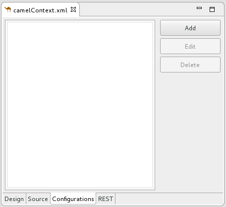Click to open the Create a new global element dialog.
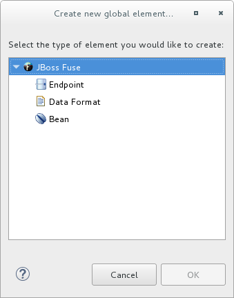The options are:
Endpoint—For details on adding a global endpoint, see Adding an endpoint
Data Format—For details on adding a global data format, see Adding a data format
In the Create a new global element dialog, select Endpoint.
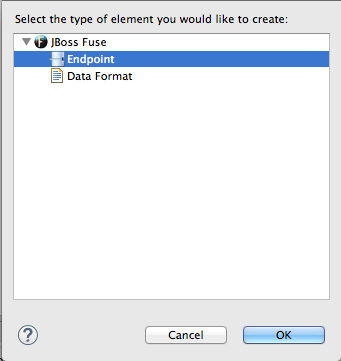Click to open the Select component dialog.
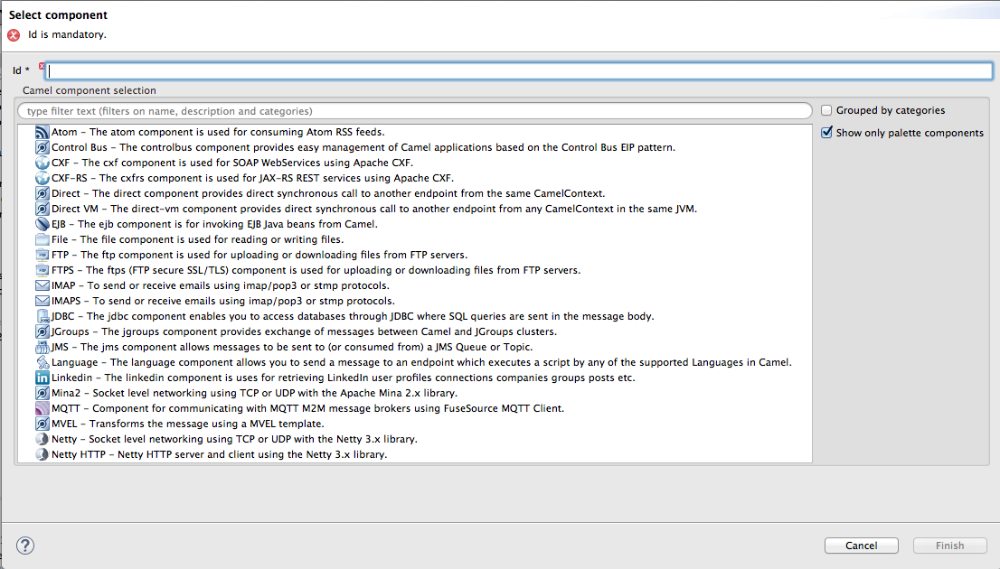![[Note]](imagesdb/note.png)
Note By default, the Select component dialog opens with the option enabled. To see all available components, disable this option.
Note The Grouped by categories option groups components by type.
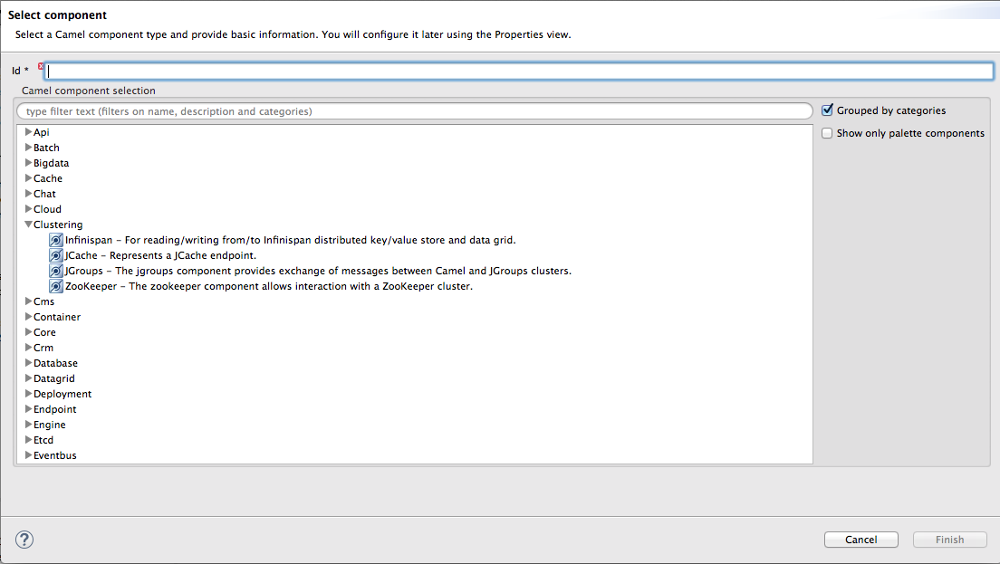In the Select component dialog, scroll through the list of Camel components to find and select the component you want to add to the context file, and then enter an ID for it in the Id field.
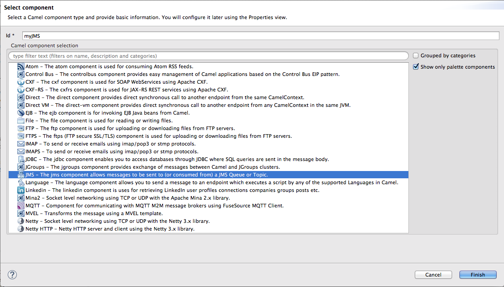In this example, we selected the JMS component and entered
myJMSin Id.Click .
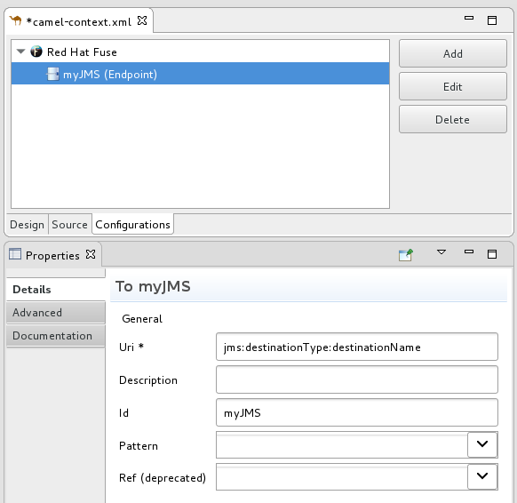If necessary, open the Properties editor to edit the component's properties as appropriate for your project.
The tooling autofills Id with the value you entered in the component's Id field in Step 3. It builds the uri (required field) starting with the component's schema (in this case,
jms:), but you must specify thedestinationNameand thedestinationTypeto complete the component's uri.To complete the component's uri, click > .
In Destination Name, enter the name of the destination endpoint (for example,
FOO.BAR). In Destination Type, enter the endpoint destination's type (for example,queue,topic),temp:queue, ortemp:topic).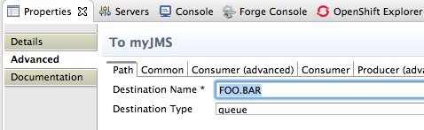Note For the JMS component, the destination type defaults to
queue. This default value does not appear in the uri field on the Details page until you have entered a value in Destination Name (required field) .The Properties editor's Details and Advanced pages provide access to all properties available for configuring a particular component.
For example, click the Consumer (advanced) tab.
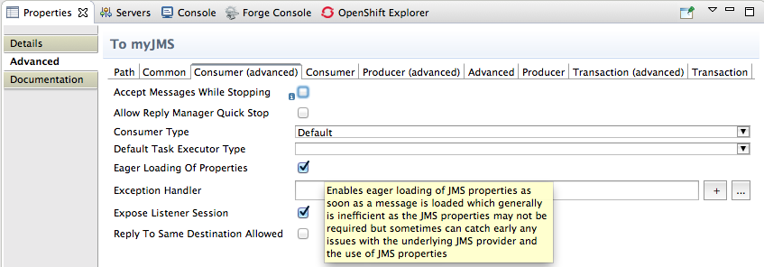Enable the properties Eager Loading Of Properties and Expose Listener Session.
Switch to Source view to see the code that the tooling added to the context file (in this example, a configured JMS endpoint), before the first
routeelement.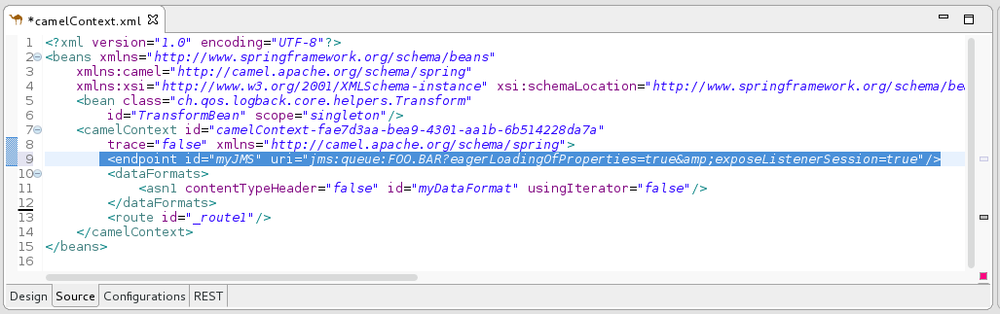When done, save your changes by selecting > on the menu bar.
In the Create a new global element dialog, select Data Format.
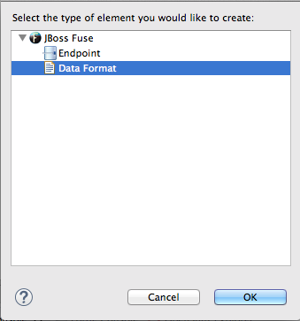Click to open the Create a global Data Format dialog.
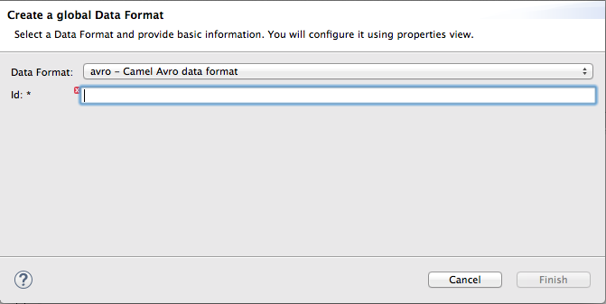The data format defaults to
avro, the format at the top of the list of those available.Open the Data Format drop-down menu, and select the format you want from the list (for example,
xmljson).In Id, enter a name for the format (for example,
myDataFormat).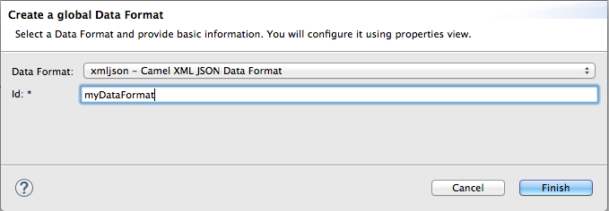Click .
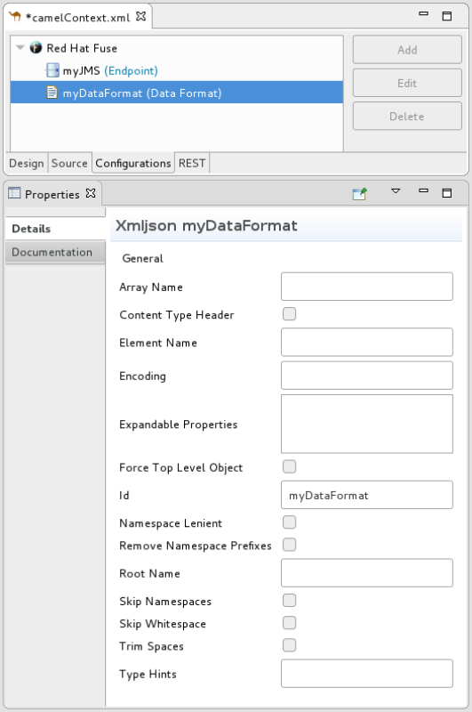If necessary, open the Properties editor to display the data format's properties for editing.
In the Properties editor, set property values as appropriate for your project; for example:
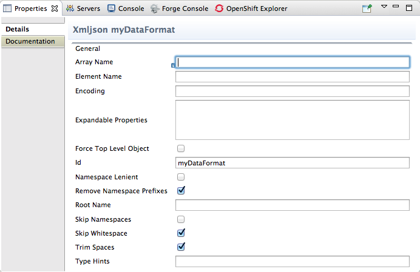Switch to Source view to see the code that the tooling added to the context file (in this example, a configured xmljson data format), before the first
routeelement.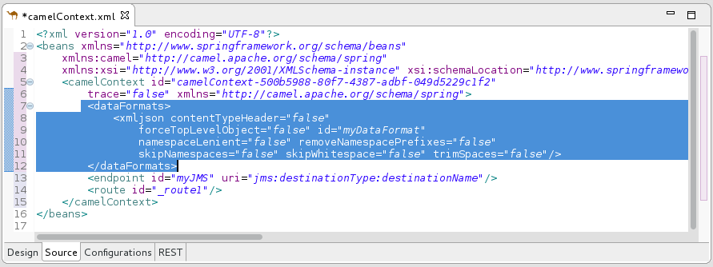When done, save your changes by selecting > on the menu bar.
The procedure is the same whether removing an endpoint or data format previously added to the routing context.
In Configurations view, select the global component—endpoint or data format—you want to delete.
For example, deleting the data format
myDataFormatpreviously added in Adding a data format: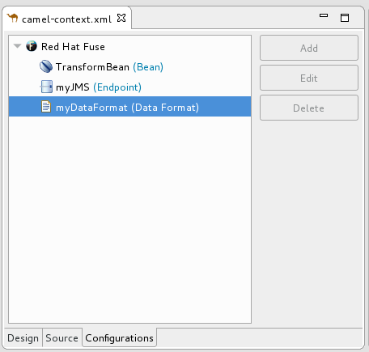Click .
The global component
myDataFormatdisappears from Configurations view.Switch to Source view to check that the tooling removed the XML code from the routing context.
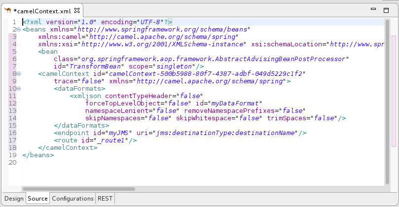When done, save your changes by selecting > on the menu bar.
The procedure is the same whether modifying the properties of an endpoint or data format previously added to the routing context.
In Configurations view, select the global component—endpoint or data format—you want to edit.
For example, editing the endpoint
myJMSpreviously added in Adding an endpoint: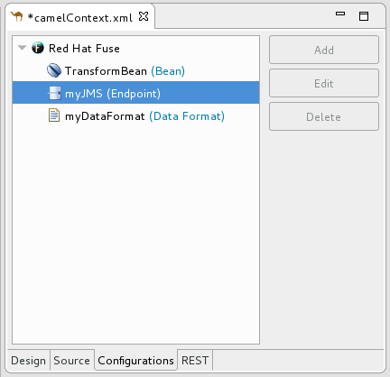Click .

In the Properties editor, modify the component's properties according to your project's needs.
For example, open the > tab, and change the value of Concurrent Consumers to
2: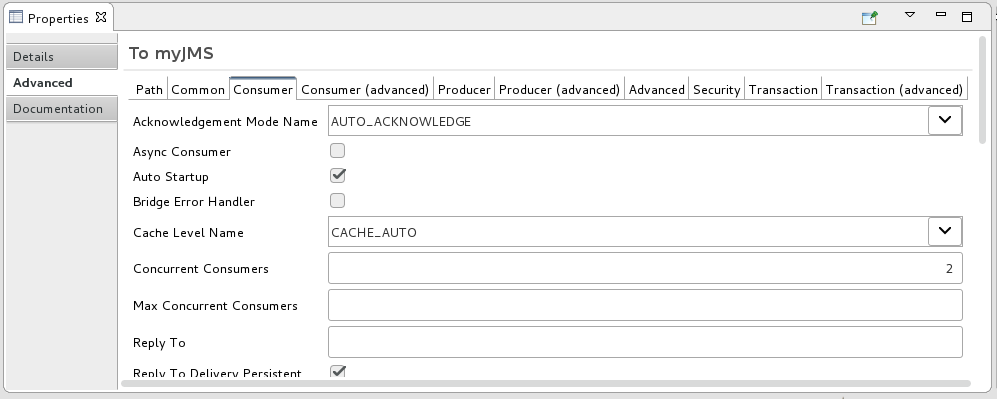Switch to Source view and check that the tooling added the property
concurrentConsumers=2to the routing context: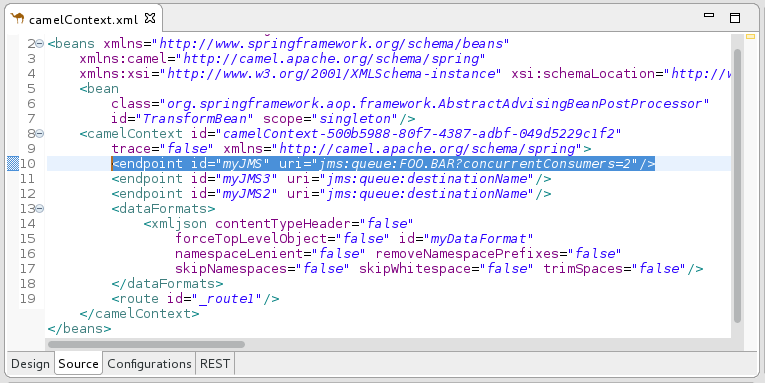When done, save your changes by selecting > on the menu bar.